Pc Gamer para jogar em 2021
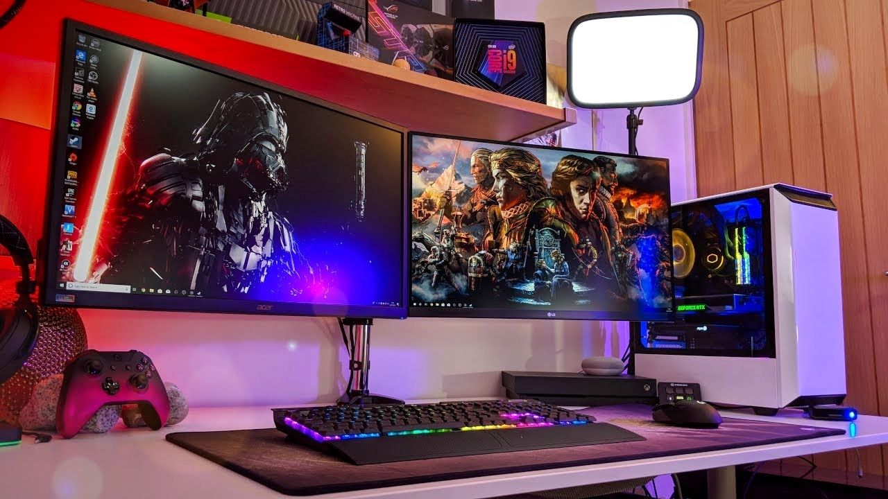
Neste programa vamos dar dicas de qual estilo de PC gamer você quer, de acordo com sua opinião, temos alguns Kits que podem te atrair.
Neste bloco vamos falar sobre jogos no geral, tanto de FPS quanto de qualidade Gráfica, o Pc gamer deve seguir os seguintes pontos:
- Jogos com uma qualidade gráfica, precisam de uma GPU mais rápida.
- Para jogos de FPS, tanto a GPU quanto a CPU precisam de frequências altas.
- Para multifunção, necessitamos de no mínimo, 8 GB de memoria RAM.
- Para a qualidade gráfica ficar melhor, precisamos de um monitor de qualidade.
- Com jogos de FPS inclusos vamos optar por um monitor de rápida atualização.
- Para um estilo futurista vamos usar muito led RGB.
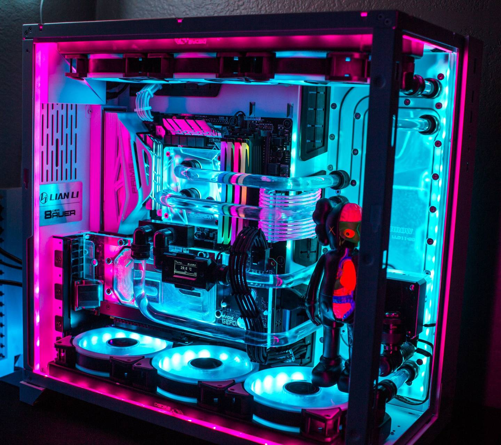
______________________________________________________________________________________________________________________________________________________________________
PLACA MÃE (MOTHERBOARD)
Placa Mãe é o principal componente de uma máquina, nela serão instaladas placa de video, memoria RAM, SSD ou HD, sistema de refrigeração, processador e outros componentes.
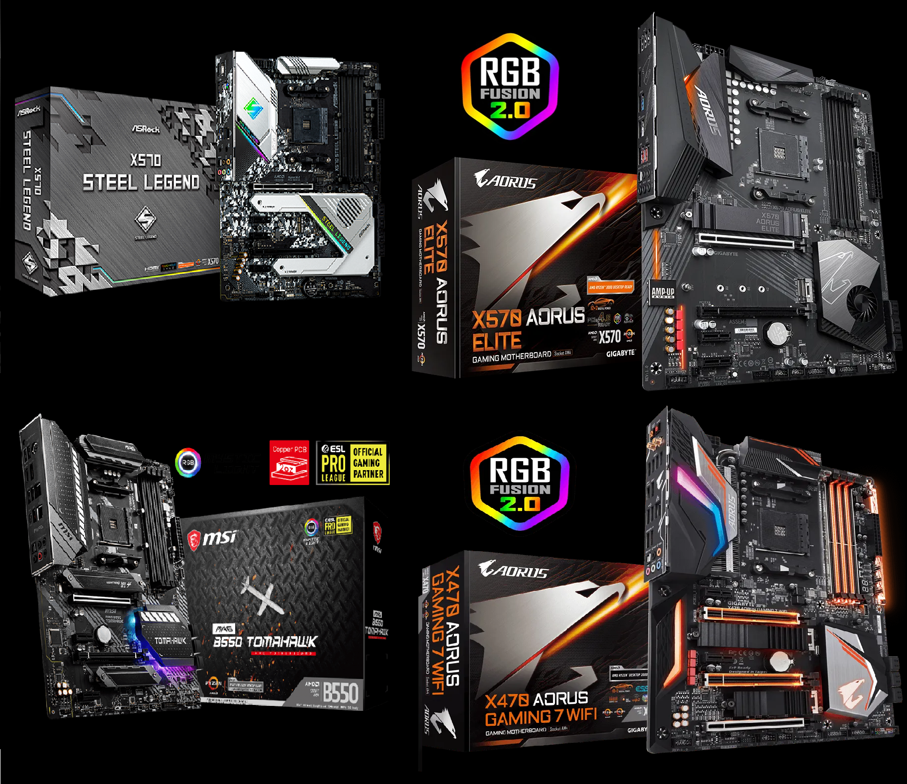
______________________________________________________________________________________________________________________________________________________________________
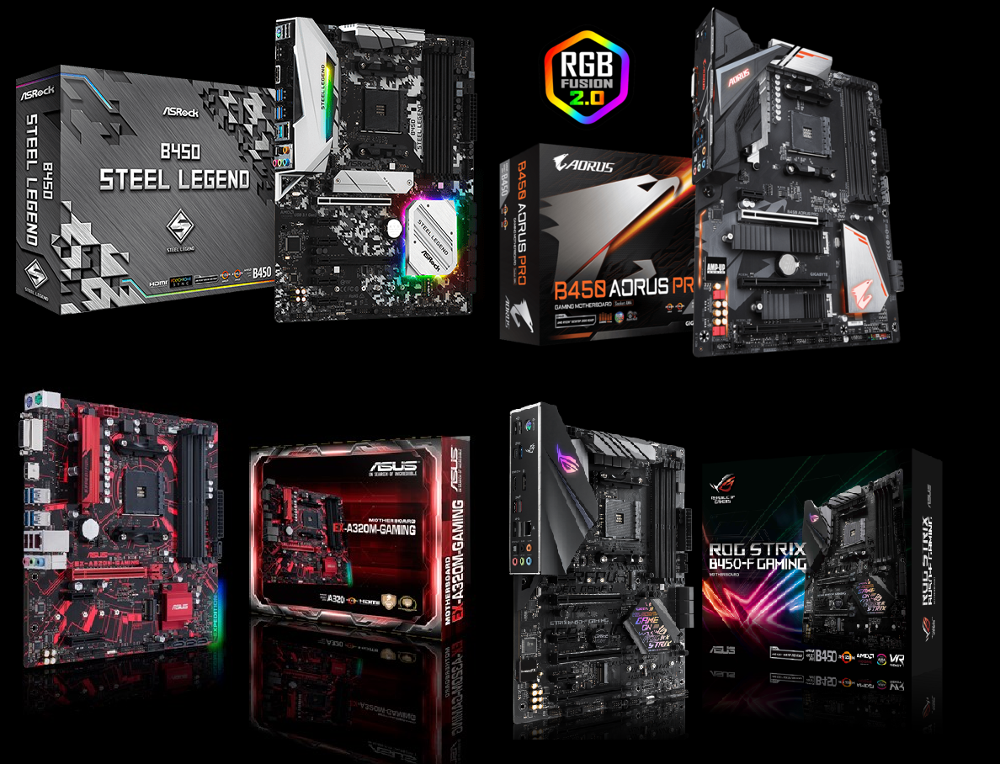
______________________________________________________________________________________________________________________________________________________________________
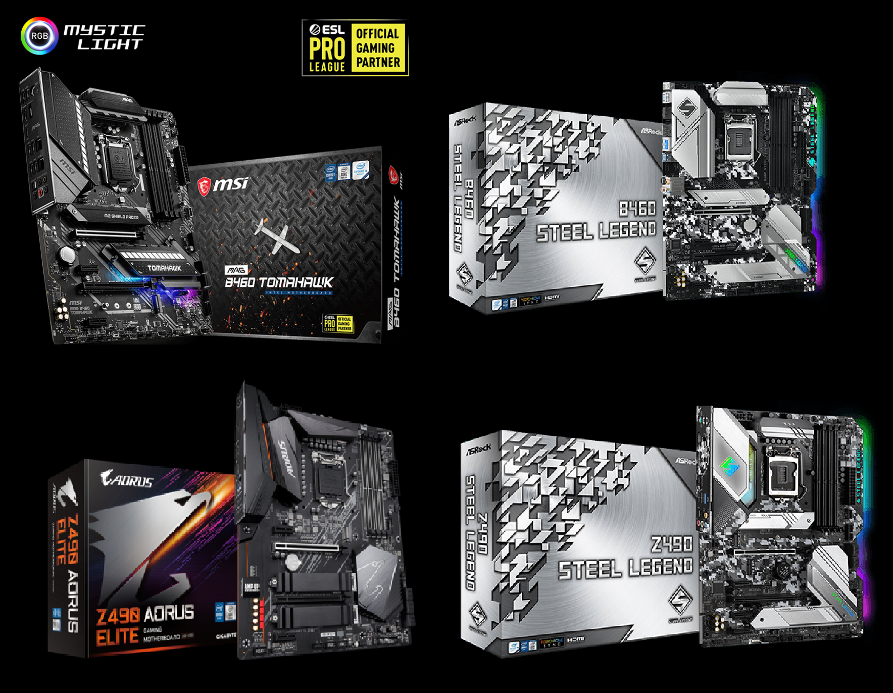
______________________________________________________________________________________________________________________________________________________________________
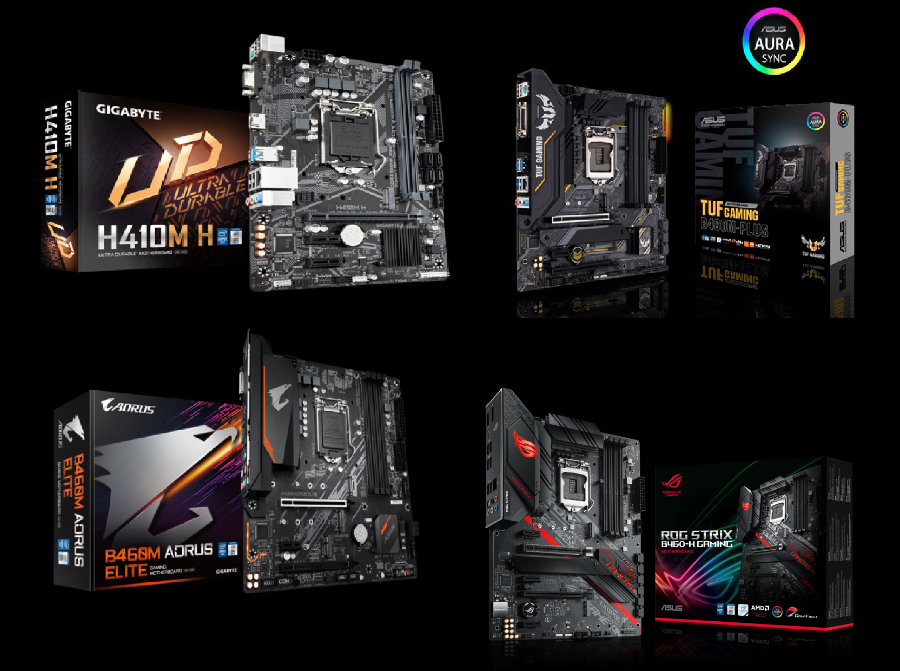
______________________________________________________________________________________________________________________________________________________________________
Processador (CPU)
No mercado, podemos encontrar diversos modelos, tipos e formas de processadores, vamos mostrar alguns processadores, mas lembre-se se escolheu placa mãe da linha AMD, pegue processador da linha AMD, o mesmo serve para a INTEL.
- Linha AMD Chipset AM4
Ryzen 9 5950x é o melhor processador para jogos que existe,
e nessecita da melhor placa mãe possivel ele possui:
- 16 NUCLEOS
- 32 THREADS
- STOCK DE 3,4GHZ
- OVERCLOCK DE 4,9GHZ
- 74MB DE CACHE
- VOLTAGEM DE 104W
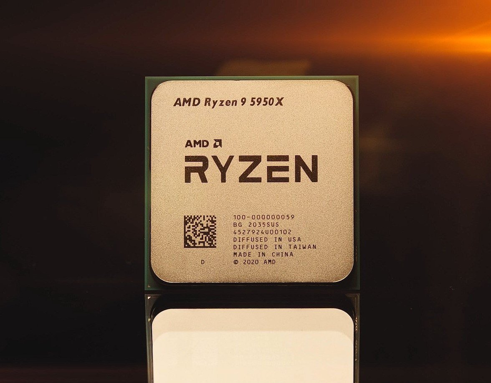
Ryzen 7 5800x é um nivel menor que o
processador anterior, mas continua sento monstro pra jogos,
e placa mae no minimo b550 o ryzen 7 tem:
- 8 NUCLEOS
- 16 THREADS
- STOCK DE 3,8GHZ
- OVERCLOCK DE 4,7GHZ
- 36MB DE CACHE
- VOLTAGEM DE 105W
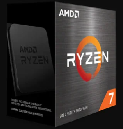
Ryzen 5 5600x é o processadro mais recomendado para a compra
seu poder é muito alto, para ele precisa de uma placa mae forte
o ryzen 5 vem com:
- 6 NUCLEOS
- 12 THREADS
- STOCK DE 3,7GHZ
- OVERCLOCK DE 4,6GHZ
- 35MB DE CACHE
- VOLTAGEM DE 65W
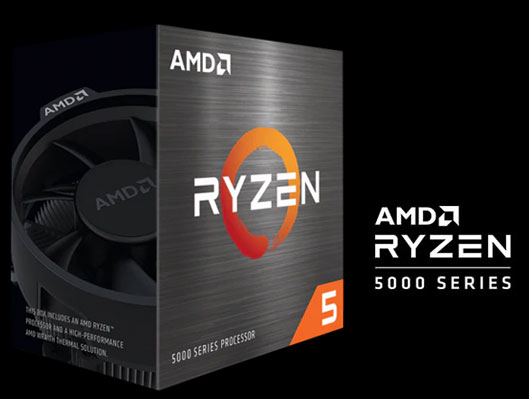
Ryzen 3 3300x é um ótimo custo-beneficio por conta da sua potencia
e do seu preço, ele pode ser instalado em placa mae mais simples
o ryzen 3 tem:
- 4 NUCLEOS
- 8 THREADS
- STOCK DE 3,8GHZ
- OVERCLOCK DE 4,3GHZ
- 18MB DE CACHE
- VOLTAGEM DE 65W

______________________________________________________________________________________________________________________________________________________________________
- Linha INTEL Chipset LGA 1200
INTEL CORE I9 é um processador concorrente ao Ryzen 9 5950x, para
ter-lo na sua máquina, vai precisar de uma placa mae TOP
o INTEL CORE I9 tem:
- 10 NUCLEOS
- 20 THREADS
- STOCK DE 3,7GHZ
- OVERCLOCK DE 5,3GHZ
- 20MB DE CACHE
- VOLTAGEM DE 95W
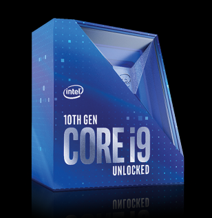
INTEL CORE I7 é um processador TOP, ele é uma ótima opção para
que quer um processador rápido.
o INTEL CORE I7 vem equipado com:
- 8 NUCLEOS
- 16 THREADS
- STOCK DE 2,9GHZ
- OVERCLOCK DE 4,8GHZ
- 16MB DE CACHE
- VOLTAGEM DE 65W
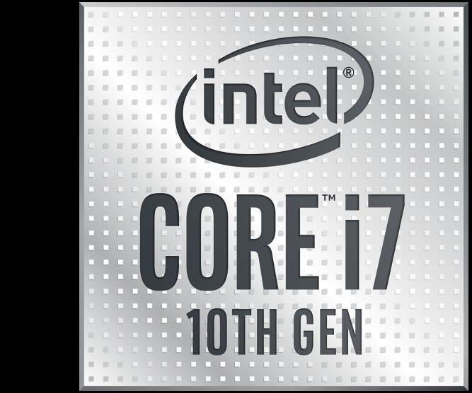
INTEL CORE I5 é um processador custo-beneficio, uma otima opção
pra quem quer economizar em processador.
o INTEL CORE I5 tem:
- 6 NUCLEOS
- 12 THREADS
- STOCK DE 2,9GHZ
- OVERCLOCK DE 4,3GHZ
- 12MB DE CACHE
- VOLTAGEM DE 65W
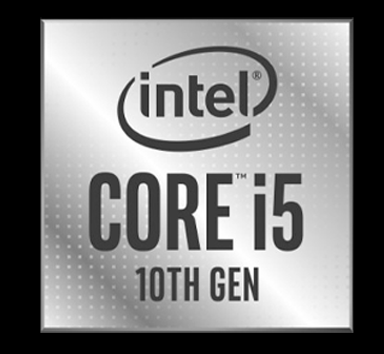
INTEL CORE I3 tem fama de ser um processador básico, e barato, e pela
sua velocidade compativel com o preço.
o INTEL CORE I3 vem equipado com:
- 4 NUCLEOS
- 8 THREADS
- STOCK DE 3,6GHZ
- OVERCLOCK DE 4,3GHZ
- 6MB DE CACHE
- VOLTAGEM DE 65W
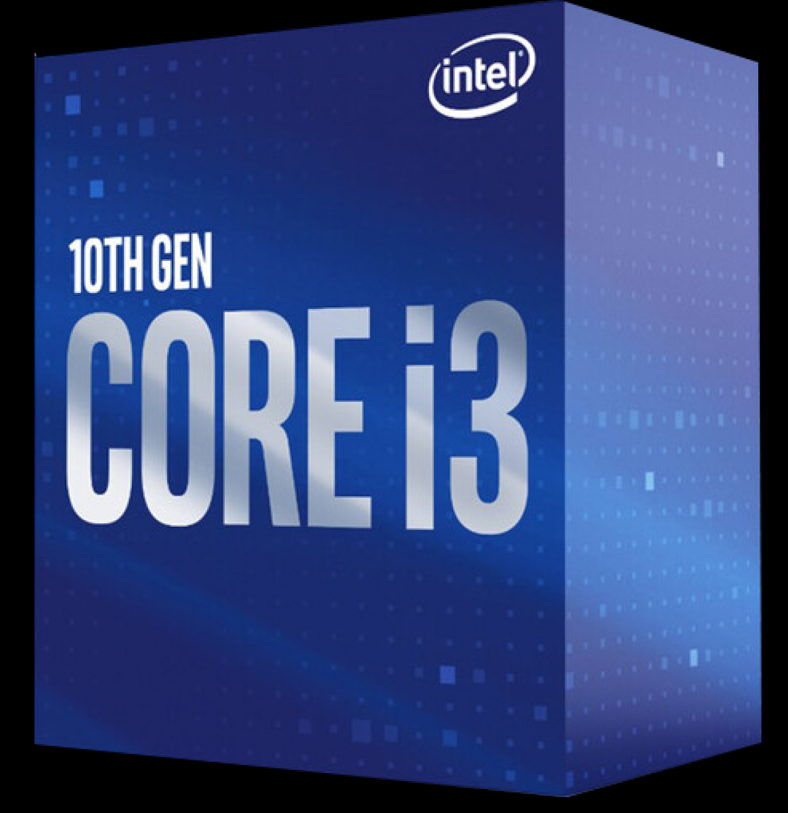
______________________________________________________________________________________________________________________________________________________________________
Placa De Video (GPU)
No mercado, existem diversas placas de video, para melhorar a qualidade do seu jogo, sem limitação, se pegar um processador TOP, pegue tambem uma placa de video TOP.
- Linha TOP pra FULL HD E 4K ULTRA
RTX 3090 é a melhor placa de video para games, até agora, sua capacidade de rodar jogos é incrivel.
RX 6900XT concorrente da RTX 3090, as duas possuem a mesma capacidade gráfica, e são monstras no full hd e 4k ultra.
RTX 3080 PRO nivel menor que as superiores, essa é mais barata, porem não deixa de ser a melhor opção da lista.
RTX 2080 SU é a mais barata, mas seu poder é surpreendende, e seu preço também.

No mercado, existem diversas placas de video, para melhorar a qualidade do seu jogo, sem limitação, se pegar um processador TOP, pegue tambem uma placa de video TOP.
- Linha Custo-Beneficio, FULL HD
GTX 1660 SU é a melhor placa de video custo befenicio do mercado, roda alguns jogos em full hd, mas 4k não.
RX 5600 XT compete mas perde pra GTX 1660 SU, mas continua sendo uma ótima placa de video.
GTX 1650 SU é a mais barata, mas roda tranquilamente jogos no ultra, a maioria deles.
RX 5500 XT é a mais simples, e aguenta jogos no ultra e possui uma boa força.

______________________________________________________________________________________________________________________________________________________________________
Armazenamento
O mercado nos aprecenta, 3 modelos de amazenamento, do mais lento ao mais rápido, do mais simples ao mais estiloso.
- SSD NVme M.2
- O SSD NVme M.2 é o mais rápido que existe até hoje.
- usando o PCIE 4.0 da placa mãe.
- 5000MB/S de leitura e 4400MB/S de gravação.
- O SSD AORUS é um exemplo de SSD NVme M.2
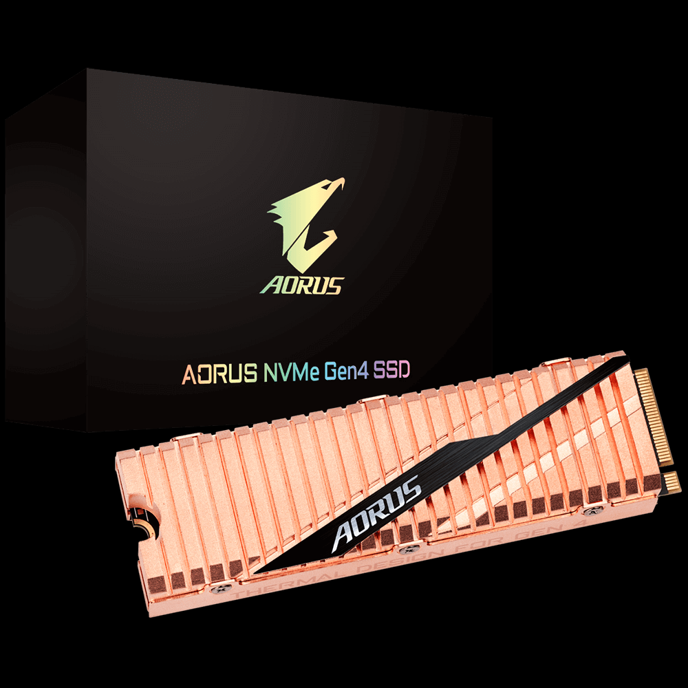